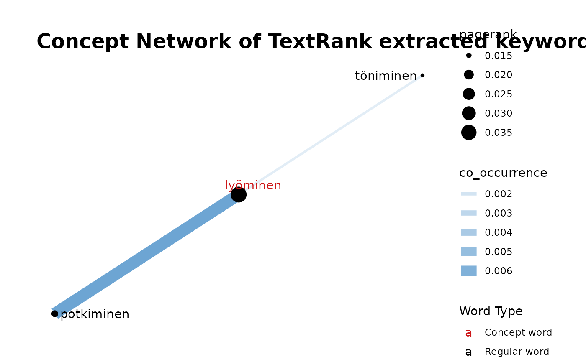
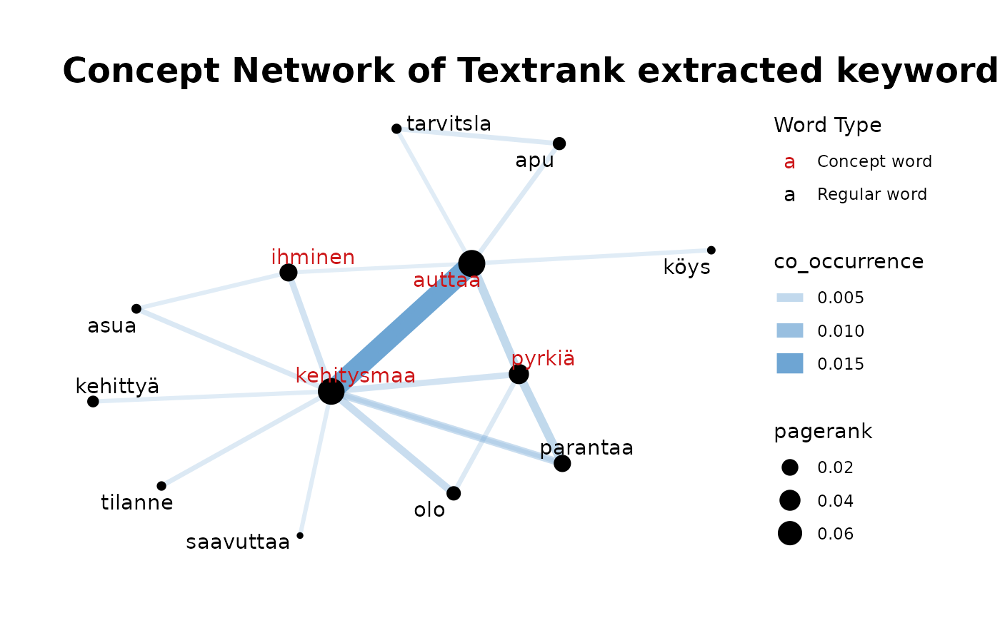
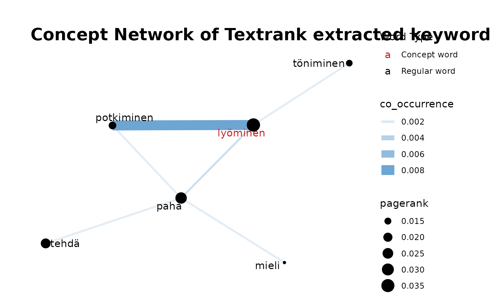
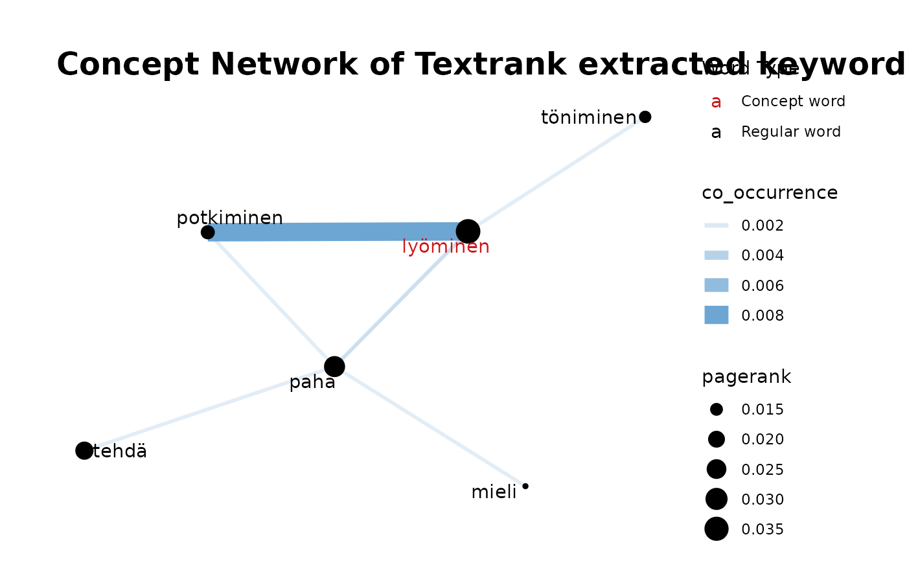

Plot Concept Network
fst_cn_plot.RdPlot Concept Network
Arguments
- edges
Output of `fst_cn_edges`, dataframe of 'edges' connecting two words
- nodes
Output of `fst_cn_nodes`, dataframe of relevant lemmas and their associated pagerank
- concepts
List of terms which have been searched for, separated by commas.
- title
Optional title for plot, default is `NULL` and a generic title ('Textrank extracted keyword occurrences) will be used.
Examples
con1 <- "elintaso, köyhä, ihminen"
data1 <- conllu_dev_q11_1_nltk
e1 <- fst_cn_edges(data = data1, concepts = con1, threshold = 3)
n1 <- fst_cn_nodes(data1, e1)
fst_cn_plot(edges = e1, nodes = n1, concepts = con1)

con2 <- "kehitysmaa, auttaa, pyrkiä, maa, ihminen"
e2 <- fst_cn_edges(conllu_dev_q11_2_nltk, con2, threshold = 5)
n2 <- fst_cn_nodes(conllu_dev_q11_2_nltk, e2)
fst_cn_plot(edges = e2, nodes = n2, concepts = con2)

con3 <- "köyhyys, nälänhätä, sota, ilmastonmuutos, puute"
e3 <- fst_cn_edges(conllu_dev_q11_3_nltk, con3, threshold = 2)
n3 <- fst_cn_nodes(conllu_dev_q11_3_nltk, e3)
fst_cn_plot(edges = e3, nodes = n3, concepts = con3)
 con4 <- "kiusata, lyöminen"
cb <- conllu_cb_bullying_iso
e4 <- fst_cn_edges(cb, con4, pos_filter = c("NOUN", "VERB", "ADJ", "ADV"))
n4 <- fst_cn_nodes(cb, e4, c("NOUN", "VERB", "ADJ", "ADV"))
fst_cn_plot(edges = e4, nodes = n4, concepts = con4)

con4 <- "kiusata, lyöminen"
cb <- conllu_cb_bullying_iso
e4 <- fst_cn_edges(cb, con4, pos_filter = c("NOUN", "VERB", "ADJ", "ADV"))
n4 <- fst_cn_nodes(cb, e4, c("NOUN", "VERB", "ADJ", "ADV"))
fst_cn_plot(edges = e4, nodes = n4, concepts = con4)
